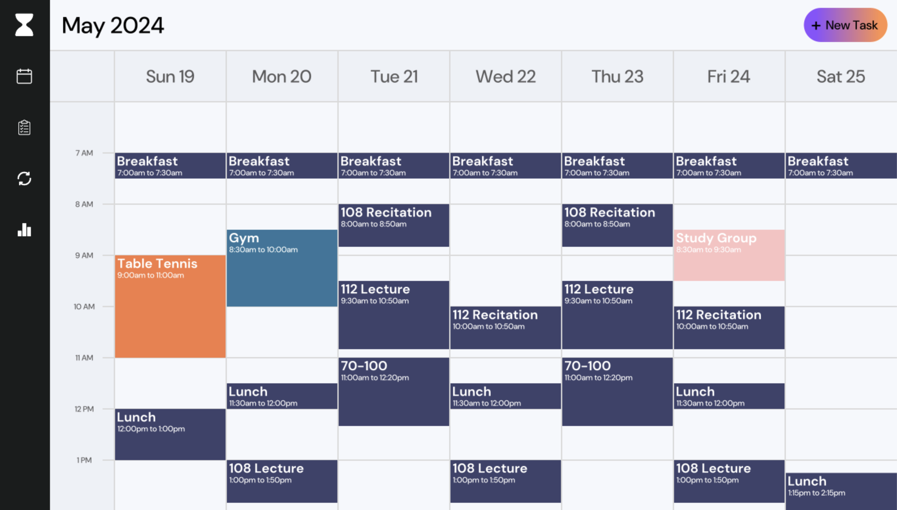
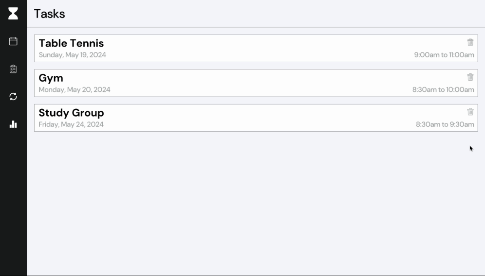
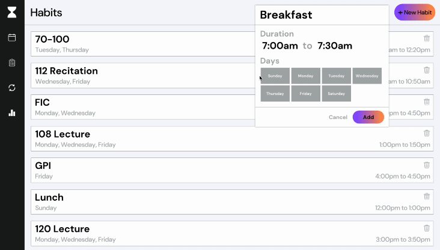
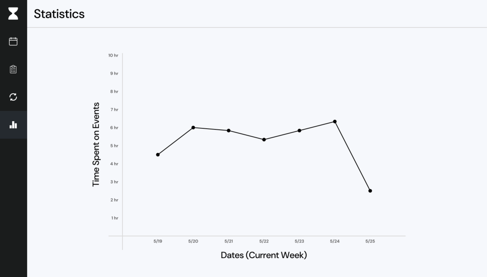
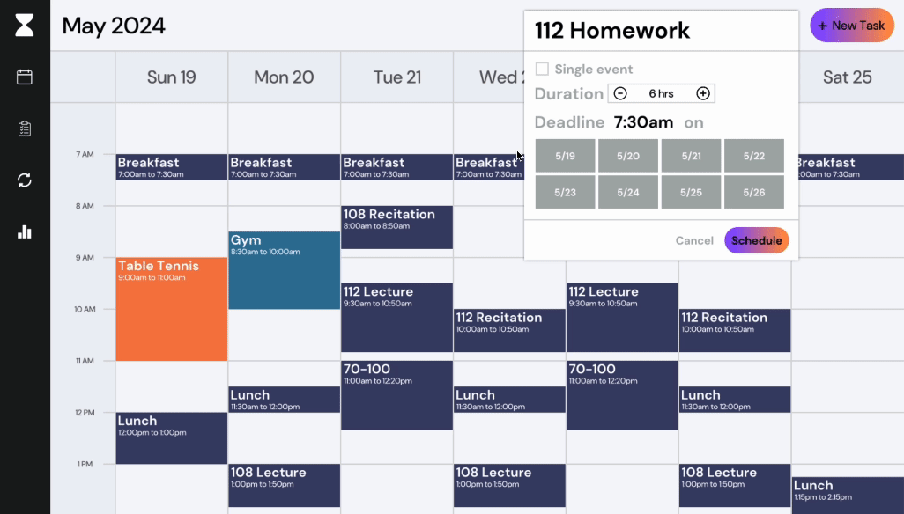
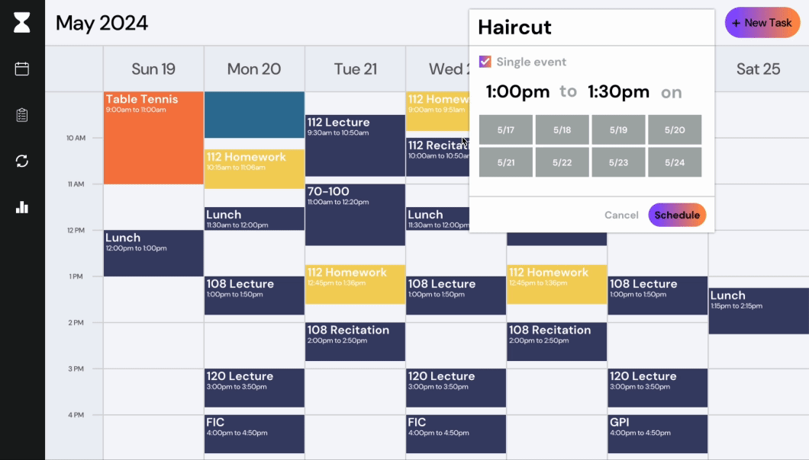

Hourglass
A digital, hassle-free calendar with the ability to automatically streamline its users' schedules. My term project for Carnegie Mellon's 15-112 Fundamentals of
Programming and Computer Science. Written exclusively in Python and utilizing CMU's graphics package.
Background
Coming into my first year at Carnegie Mellon, I knew it was essential to have some means of organization regarding both my assignments and my extracurricular activities. Due to the sheer influx of work given to students at CMU, I decided to try out Google Calendar to help keep tabs on what I needed to get done. However, I felt as though I was experiencing some issues with the application. While I did want to stay organized, I found myself spending far too much time planning out when I wanted to work on assignments and in what lengths of time it would be. Eventually, I abandoned the idea of using Google Calendar altogether and resorted to using a simple to-do app to track my assigned work.
A Better Solution
When it came time to decide what to do for my term project in CMU's Python course, 15-112, I was initially torn between ideas. From a young age, I had always loved playing video games, and, due to the graphics-based nature of 15-112, I thought recreating one could be a potentially good project. However, in years prior, I had developed a plethora of retro arcade games, and I wanted to challenge myself to do something more.
However, it soon dawned on me: this was the perfect opportunity to create the calendar app I had been searching for. With this new goal in mind, I set out to create my ideal calendar application, drawing from my experience with Google Calendar and the shortcomings I had encountered.
However, it soon dawned on me: this was the perfect opportunity to create the calendar app I had been searching for. With this new goal in mind, I set out to create my ideal calendar application, drawing from my experience with Google Calendar and the shortcomings I had encountered.
Design
While Google Calendar does have an extraordinary design, I wanted to tailor my application more towards students and working professionals, as I had initially found Google Calendar was lacking in this aspect. Much like Google Calendar, I decided to implement a grid-based layout with tiles representing individual events and the height of each tile representing the length of time of that specific event. Dates of the current week would be shown above the grid, while specific times would be shown to its left.
However, in addition to this main calendar screen, I implemented three other pages available at the user's disposal: one for tasks, one for habits, and one for statistics.
The tasks page acts as a central hub for users' tasks previously input on the initial calendar screen. Tasks are given to the user in widget form, displaying relevant information such as the task's title, date, and time. The user also has the ability to remove tasks by simply pressing the trash icon found in the top right of the widget.
The habits page features a similar layout to the aforementioned tasks page, with the addition of a button to create new habits. To add habits, users simply specify a name for their habit, along with the times and days on which it takes place. In doing so, the habit will appear at the specified times and days in the main calendar screen, repeating at these times and days across every subsequent week.
Finally, the statistics page acts as a means of reporting to the user how much time they are spending on input events including both tasks and habits. Times are displayed in graph form, with Hourglass automatically tracking how many hours each day the user has input into their individual calendar.
From here, Hourglass will automatically split the given duration into individual work sessions of relatively equal length up until the day in which the project or homework is due. Hourglass has the ability to automatically place these work sessions into the user's calendar wherever it works best, and takes into account already scheduled tasks and habits when doing so.
Additionally, if the user later inputs an additional task or habit that takes place within the timeframe of a future work session, Hourglass will automatically reschedule the work session to a later point in the user's calendar.
After one of these events happens, Hourglass first generates the duration of each work session, stored inside a list. Then, using the backtracking algorithm, it checks to see if the latest duration of a work session can be added to the day prior to the due date of the split-event task. It does so by first specifying a starting time in which it intends to place the work session, then confirming that no prior events overlap with the work session at this time.
Assuming this condition is met, the algorithm then removes the duration of the current work session from the list and adds it to a list keeping track of a current solution. If not, the algorithm calls itself again, moving onto a later starting time and repeating the process.
Once each day has a dedicated work session, the algorithm returns a solution in the form of a list with start and end times, and the resulting list is drawn on the calendar. In the event that no solution is found, such when the duration of the split-event task is too large, the algorithm will inform the user that no work sessions can be generated within the given timeframe.

However, in addition to this main calendar screen, I implemented three other pages available at the user's disposal: one for tasks, one for habits, and one for statistics.
The tasks page acts as a central hub for users' tasks previously input on the initial calendar screen. Tasks are given to the user in widget form, displaying relevant information such as the task's title, date, and time. The user also has the ability to remove tasks by simply pressing the trash icon found in the top right of the widget.

The habits page features a similar layout to the aforementioned tasks page, with the addition of a button to create new habits. To add habits, users simply specify a name for their habit, along with the times and days on which it takes place. In doing so, the habit will appear at the specified times and days in the main calendar screen, repeating at these times and days across every subsequent week.

Finally, the statistics page acts as a means of reporting to the user how much time they are spending on input events including both tasks and habits. Times are displayed in graph form, with Hourglass automatically tracking how many hours each day the user has input into their individual calendar.

Functionality
While users are able to add single events to their calendar, the cornerstone of what sets Hourglass apart from other digital calendars is found within its ability to automatically split tasks into individual work sessions as requested by the user. Instead of having to manually input multiple times in which users plan to work on projects or homework, users can simply give Hourglass the duration in which they expect their project or homework will take, along with its due date or deadline.
From here, Hourglass will automatically split the given duration into individual work sessions of relatively equal length up until the day in which the project or homework is due. Hourglass has the ability to automatically place these work sessions into the user's calendar wherever it works best, and takes into account already scheduled tasks and habits when doing so.

Additionally, if the user later inputs an additional task or habit that takes place within the timeframe of a future work session, Hourglass will automatically reschedule the work session to a later point in the user's calendar.

The Algorithm
In order to accomplish the previously mentioned functionality, I utilized backtracking to develop an algorithm that would automatically place the generated work sessions into their respective places. The algorithm is triggered each time the user either adds a split-event task or adds a task that overlaps with a previously placed work session.
After one of these events happens, Hourglass first generates the duration of each work session, stored inside a list. Then, using the backtracking algorithm, it checks to see if the latest duration of a work session can be added to the day prior to the due date of the split-event task. It does so by first specifying a starting time in which it intends to place the work session, then confirming that no prior events overlap with the work session at this time.
Assuming this condition is met, the algorithm then removes the duration of the current work session from the list and adds it to a list keeping track of a current solution. If not, the algorithm calls itself again, moving onto a later starting time and repeating the process.
Once each day has a dedicated work session, the algorithm returns a solution in the form of a list with start and end times, and the resulting list is drawn on the calendar. In the event that no solution is found, such when the duration of the split-event task is too large, the algorithm will inform the user that no work sessions can be generated within the given timeframe.